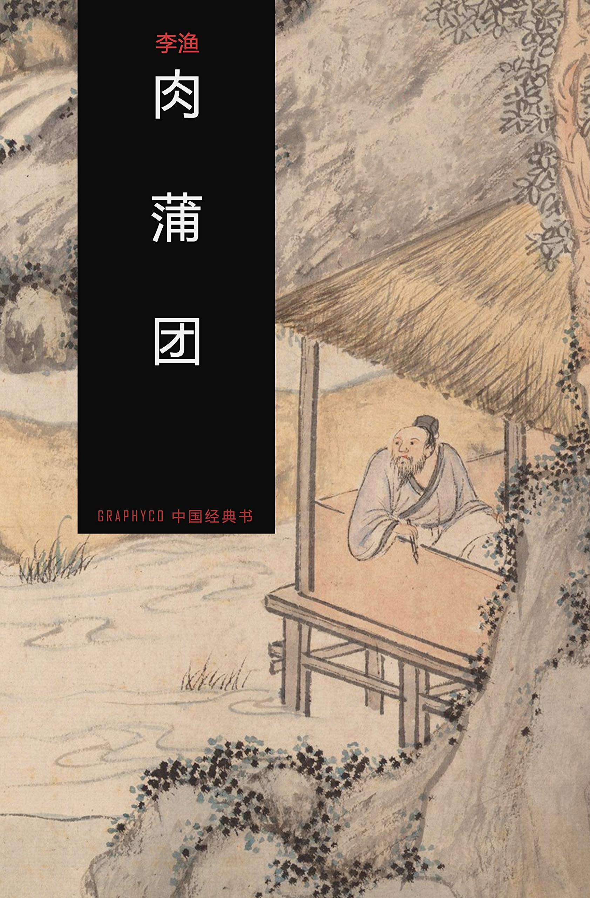

第二十回 布袋皮宽色鬼奸雄齐摄入 旃檀路阔冤家债主任相逢#

却说孤峰和尚自从放过未央生，时时刻刻埋怨道，毕竟是我法力不高，婆心不切，见了情魔色鬼走过不能收缚，任他流毒于苍生，肆恶于闺阃，乃老僧之罪也。既不能缚鬼受魔要这皮布袋何用？就拿去挂在大门外面松树梢头，又削一块小板，写几行细字，钉在松树上道：
未央生一日不至，皮布袋一日不收；皮布袋一日不烂，老和尚之心一日不死。但愿早收皮布袋，免教常坐肉蒲团。
这件东西却也古怪，自从未央生去那一日在松树上挂起，挂到如今，已是三年，不但一些不烂，反觉得比未挂之先倒硬挣起来。未央生走到时节，看见松树梢悬一个皮布袋，又看见树上有一块小板，小板上有两行小字，念了一遍，不觉痛哭起来。就把这条木板当做孤峰法像，跪在松树旁不知拜了几十拜，然后爬上树去，取了皮布袋下来，顶在头上，走入佛堂。遇着孤峰打坐，就跪在他面前，不住的磕头。从入定之初，磕到出定之後，约有三个时辰，岂止磕一百二十个响头而已。
孤峰走下蒲团，一把搀住道：“贤居士重来赐顾，就见盛情了，为何行此重礼？快请起来。”未央生道：“弟子愚蒙，悔当初不曾受得教悔，以至肆意胡行，把种种落地狱之事都做出来。如今，现在的阳报虽然受了，将来的阴报还不曾受，要求老师父哀怜，收在法座之下，使弟子忏悔前因，归依正果。不知老师父可肯收约否？”孤峰道：“既然收我皮布袋进来，我岂有不收纳之理。只恐你道念不坚，将来又有入尘之事。”未央生道：“弟子因悔恨之极，方才猛省回头。如今只当是从地狱里面逃走出来，那里还敢再去。自然没有反覆的，只求师父收纳。”孤峰道：“既然如此，收纳你就是。”未央生爬起身来，重新行礼。孤峰就拣个好日，替他落了头发。未央生告过孤峰，自取法名叫做“顽石”。一来自恨回头不早，有如顽石；二来感激孤峰善于说法，使三年不点头的顽石依旧点起头来。从此以後，立意参禅，专心悟道。
谁想少年出家到底有些不便，随你强制，淫心硬挠欲火。在日间念佛看经自然混过，睡到半夜，那孽物不知不觉就要磨起人来，不住在被窝中碍手绊脚，捺又捺它不住，放又放它不倒，只得要想个法子去安顿它。不是借指头救急，就是寻徒弟解纷，这两桩事是僧家的方便法门。未央生却不如此，他道出家之人，无论奸淫不奸淫，总要以绝欲为主。这两桩事虽然不犯条款，不丧名节，俱不能绝欲之心，与奸淫无异。况且手铳即房事之媒，男风乃妇人之渐，对假而思真，由此而及彼，此必然之势，不可不禁其初。偶然一夜，梦见花晨与香云姊妹到庵拜佛，连玉香、艳芳也在里面，未央生见了愤恨之极，就叫花晨与香云姊妹帮助他拿入，睡想转眼之间不见了玉香、艳芳两个，单单剩下四位旧交，就引他入禅房，大家脱了衣服，竟要做起胜会来。把阳物凑着阴门正要干起，被隔林犬吠忽然惊醒，方才晓得是梦。那翘然一物，竟在被窝里面东钻一下，西撞一头，要寻旧时的门户。顽石捏了这件东西，正要想个法子安顿它，又忽然止住道，我生平冤孽之根，皆由于此，它就是我的对头，如今怎么又放纵它起来。就止了妄念，要安睡一觉。
谁想翻来复去再睡不着，总为那件孽根在被里打搅。心上想道，有这件作祟之物带在身边，终久不妙，不如割去了它，杜绝将来之患。况且狗肉这件东西是佛家最忌之物，使它附与身体也不是好事。若不割去，只当是畜类，算不得是人身，就修到尽头地步，也只好转个人身，怎能成佛作祖？想到此处，不待天明，就在琉璃上点下火来，取一把切菜的薄刀。一手扭住阳物，一手拿起薄刀，恨命割下。也是他人身将转，畜运将终，割下的时节竟不觉十分疼痛。
从此以後，欲心顿绝，善念益坚。住了半年，还是泛泛修行，不曾摩顶受戒。到半年以後，聚了一二十僧，都是死心受戒，没有转念的人，请孤峰登坛说法。但凡和尚受戒，先要把生平做过的罪犯逐件自说出来，定了罪案，然后跪在佛前，求大和尚替他忏悔。若有一件不说出来，就是欺天诳佛，犯了不赦之条，随你苦修一世也成不得正果。
众僧请孤峰登坛拜毕，以入门之先后定了次第。大家分坐在两旁，孤峰把受戒的条规说了一番，就叫众僧各陈罪过，不得隐讳。顽石进门最迟坐在末席。一时轮未及他，只听得众僧里面也有杀人放火的，也有做贼奸淫的，皆自己陈告出来。后来轮着一僧，相貌粗笨，坐在顽石上首，也陈告道：“弟子生平不做恶事，只有卖身与人为仆、奸了主人之女，连她使女都拐出来，卖与青楼为妓这桩罪犯。真是死有余辜，求师父忏悔。”孤峰道：“你这罪重大，只怕忏悔不来。自古道‘万恶淫为首’，只消一个淫字也就够得紧了，怎么做出拐事来？又怎么卖她为娼？你这罪恶就有几世不得超升，我便替你忏悔，只恐菩萨不准，奈何？”和尚道：“禀告师父，这事是别人逼我做，不是我自己要做。只因那妇人的丈夫先奸我妻子，又逼我卖与他，我没有势力，敌他不过，所以逼上梁山，做了这事。其情可原，或者还可以忏悔。”
顽石听了，不觉动心，就问老师兄：“你拐他去卖的妇人叫甚么名字？是哪一家的妻子？那一家的女儿？如今在何处？”和尚道：“他是未央生之妻，铁扉道人之女，叫做玉香，丫鬟叫做如意，如今在京师接客。”未央生大惊道：“这等说来，你就是权老实了！”和尚道：“莫非你就是未央生么？”顽石道：“正是。”两个一齐走下蒲团，各赔个不是，然后对着孤峰共剖原情，各陈罪犯。孤峰大笑道：“好！冤家也有相会的日子。亏得佛菩萨慈悲，造了这条阔路，使两个冤家行走，一毫不碍。若在别路上相逢，就开交不得了。你两个罪犯原是忏悔不得，亏那两位夫人替丈夫还债，使你们的罪犯轻了许多。不然莫说修行一世，就修行十世也脱不得轮回，免不得劫数。我如今替你忏悔，求佛菩萨大舍慈悲看那两个妻子面上，宽待你们一分。”就叫两人跪在佛前，自己念起经来，替他俩忏悔。
忏悔之後，顽石又问道：“请问师父，奸淫之人既有妻子女儿，妻子还过了债，那怀抱中的幼女，也可以赦得他过，后来不还债么？”孤峰摇头道：“赦不过，赦不过。奸淫的人，除非不生女儿就罢，若生下女儿就是还债的种子。那里赦得她过。”未央生道：“不瞒师父说，弟子现有两个债种，将来定是不赦得了。弟子要别师父回去，用慧剑除了孽根，只当生来时节一盆水淹死了，不曾领起来的一般。”孤峰合掌念一声“阿弥陀佛”道：“如此恶言，不该出于你口，入于我耳。那里有受过法戒的和尚还想杀人的道理？”顽石道：“既不可杀，当用何法以处之？”孤峰道：“那两个孩子不是你的孩儿，是天公见你作恶不过，特送与你还债。古语说得好‘一善能解百恶’，你只是一心向善，没有转移，或者天公回心，替你收去，也不可知。何须用甚么慧剑？”顽石点头道：“是。”遂一心向善奉佛。
又过了半年，正在禅堂与孤峰讲话，忽见有个大汉闯进门来。顽石一看，见是赛昆仑。先参佛像，然后拜孤峰。顽石对孤峰道：“这人就是弟子的盟兄，叫做赛昆仑。是当今第一个侠士。”孤峰道：“莫非就是穿窬豪杰、生平有五不偷的人么？”顽石道：“然也。”孤峰道：“这等，是一尊贼菩萨了。贫僧何人，敢受得菩萨的拜？”就要跪下答拜。赛昆仑忙扯住道：“弟子今日到此，一来为访故人，二来为参活佛。师父若不受拜，是绝人向善之路，坚人作恶之心。可见天下人该做暗贼，不该做明贼；该做衣冠之贼，不该做穿窬之贼了。”孤峰道：“这等说，贫僧不敢回礼了。”赛昆仑又与顽石行礼，然后分宾主坐下，对孤峰叙了寒温，就立起身，要与顽石到后面去说话。顽石道：“小弟以前的事都与师父说过，家中有甚么隐情不妨面讲。”赛昆仑听了，依旧坐下道：“劣兄谋事不忠，不但不可托妻，亦且不堪寄子。今日相会甚觉无颜。”顽石道：“这等说来，想是家中的孽障有甚么原故了。”赛昆仑道：“你两位令爱，又无疾病，好好睡在床上，就一齐死了。临死之夜，两个乳母都梦见有人叫唤，说他家的账目都已算清，用你们不着，跟我回去罢。及至醒来，把孩子一摸就没用了。这事着实古怪。”顽石听了大喜，就怕自己惧怕女儿还债，师父教我一心向善，天公自然回心替你收去的话述了一遍。如今孽障消除，乃大幸之事，老兄怎么说起负托的话来。
赛昆仑闻言不觉毛骨竦然。听了一会，又道：“还有一个喜信报你。那淫妇艳芳背你逃走，其实可恨。小弟终日缉访不着。谁想被一个和尚拐去，藏在地窖中，被我无心看见，替你除了。”孤峰道：“她藏在地窖中可谓极稳的了，你怎么能看见？”赛昆仑道：“那个和尚常在三叉路口惯做谋财害命的事，我打听他有无数银子藏在地窖中。那一夜去偷他，谁想他睡在床上与妇人说话。我就躲在旁边细听，只见妇人道：‘我当初的原夫叫做权老实，虽然粗笨，倒是一马一鞍，没有别个妇人分宠。谁想赛昆仑替未央生做事，把我奸骗上手，强娶过去。他丢了自家妻子终日去走邪路，教我独守空房。弄到精力衰微，应付不来，又到远处去躲避差徭，不管家人的死活。这样的薄悻男子，我为甚么跟他？’弟子听了，知是艳芳，不觉大怒，拔出利剑掀起帐子，把两个杀了。然后点起火来，搜寻财物，约有二千多金都被弟子取来，任意挥霍，济了无数的穷人。请问师父，这两个男女该杀不该杀？这一注钱财该取不该取？”
孤峰道：“杀也该杀，取也该取，只是不该是居士杀，不该是居士取，恐天理王法上还有些说不过去，只怕阴阳二报定有所不免。”赛昆仑道：“人情痛快即是天理昭张，有何说不去？我做一世贼，不曾弄出事来，难道为这项银子就犯了王法不成？”孤峰道：“居士不要这等说，天理王法两件事都是一丝不漏的。没有一个不报，只是迟速之分。报的速的倒还轻些，报的迟的，忽然发作起来就当不起了。那和尚既犯了奸淫，那妇人既犯了私奔，天公自然会诛殛他，难道少了雷神霹雳，定要假手于人去杀他们不成？就作要假手于人，天下人个个有手，为甚么不去假他，单要借重你一个？难道只有你这手是杀得人死的不成？大权不可假人，太阿不容旁落，杀人的大事，天公能主持，使有罪之人依旧被有罪之人所杀，岂有付之不问之理。所以将来的阴报定不能免，或者比杀良善之人不同，罪略轻些也不可知。居士这桩事业既然做了一生，料想你的大名是没有一个衙门不知，没有一个官府不晓得了。你偷来的银子虽然济了穷人，别人不信，只说你藏在家中，少不得有个寻着你的日子。你往常所得的财物若果然藏在家中，还好送去买命，只怕济穷人的银子一时追不转来，就有性命之忧了。所以将来的阳报定不能免，只怕发作的迟，比初犯罪孽略重大些也不可知。”
赛昆仑平日原是些狼器的人，只因性子不好，人人惧怕他，所以善言不入于耳。如今听了这番正论，就不觉动了悔过之心，不消强逼，他竟有个反邪归正的意思。就对孤峰道：“弟子所做的事，原不是正人君子所为。只因世上有钱的人自家不肯挥霍，所以要去取些出来，替他做几件好事，只想为人，竟不想着自己。照师父说来，弟子作恶多端，阴阳二报都是不免的了。但如今从此回头，可还忏悔的去么？”孤峰指着顽石道：“他之作孽比彼还重得多。只因一心向善，就感动了天心，把还债的女儿都替他收他回去，这是你亲耳听见的话，不是贫僧附会出来的。即此一推，忏悔得去忏悔不去就知道了。”
顽石见他有向善之心，不胜之喜，就把自己三年前不受师父教训，肆意妄行，后来报应句句合着他所言，不可不以小弟为鉴。塞昆仑定了主意，就拜孤峰为师，削了头发，立志苦修二十年，成了正果。与孤峰、顽石一同坐化。
可见世上的人皆可作佛，只因被“财、色”二字缚住，不能跳脱迷津，超登彼岸。是以天堂之上，地广人稀；地狱之中，人稠地窄。上天大帝，清闻不过；阎罗天子，料理不来。总是开天辟地的圣人多事，不该生女子、设钱财，把人限到这地步。如今把这两句《四书》定他罪案，道： 始作俑者，其为圣人乎？
评曰：
开首处是感激圣人，收场处又埋怨圣人，使圣人欢喜不得，烦恼不得，真玩世之书也。仍以《四书》二句为圣人解嘲曰：知我者其为肉蒲团乎？罪我者其为肉蒲团乎？
xiabook。comt-x-t-小-说-天.堂
下书网 手机端免费下载txt http://m.xiabook.com ，最有文艺气息的文学网站，我们提供给您的小说不求最多，但求最经典最完整